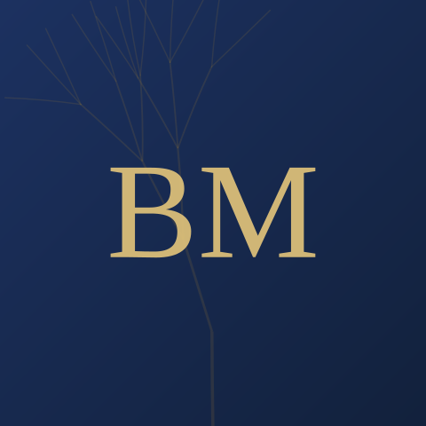

My Profile
Naturally curious, especially about how people operate inside organisations. Over 25 years leading global operations and sustainability, I learned that the real constraint is rarely the strategy. It's the human system: assumptions, incentives, communication styles, culture.

I enjoy coaching. It's an opportunity to work with amazing people to solve problems and improve performance, so they can thrive.
I've worked as Chief Operations and Sustainability Officer within a global law firm, leading and implementing the largest three-way merger in the European legal sector; as CEO of a Romanian outsourcing services provider; and as CFO of a film distribution and multiplex developer in Eastern Europe.
I bring my own experience of change, transformation, growth and mergers across companies and cultures. I coach out of a deep curiosity about the many rivers my clients have navigated, and how they can reach their best performance through the current and future rapids.
A case in point
Prior to founding Alluvial, executive coaching was already part of my daily work. In this merger I mentored and coached the heads of every business support function to get everyone on the same page, and we went beyond expectations as a cohesive group working towards one programme goal.
I proposed completing the merger in under six months, with all staff and partners in the same office, on the same equipment and the same software from day one. Some thought it was too ambitious. I could show how we'd mitigate the risk on any site that wasn't ready, and what everyone stood to gain by trusting the team.
Every other law firm merger of comparable size had seen combined revenue drop, and taken upward of five years to get everyone onto shared systems. This one increased revenue every year post-merger, kept its organic growth, and lost no clients, top-performing fee earners, or teams to the disruption.
What I bring
COO/CFO-level experience, at global scale.
Mergers, outsourcing, reinsourcing, business continuity and engagement through COVID and in war zones.
Change and coaching both need to produce financially literate results, not just good intentions.
No change happens on paper alone. New tools and models don't guarantee results if people aren't thriving.
UK, EU, Middle East, Asia, Eastern Europe, joint-venture work.
Experimenting for the best result, in a safe, agenda-free space where you find your own solutions.